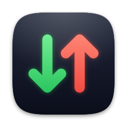

Seedwell
A light BitTorrent client that lives in the menu bar on the Mac and in the notification area on Windows. Install it with one command.
Seedwell runs on a Mac or a Windows PC. Open this page there, or copy its link to send it to yourself.
Install on your Mac
macOS 15 or later, on a Mac with Apple silicon (M1 or later).
- Open Terminal: press ⌘ Space, type Terminal and press Return.
- Paste this and press Return:
curl -fsSL https://github.com/kkollsga/seedwell/releases/latest/download/install.sh | bash - Seedwell opens and its icon appears in the menu bar.
What the command does, updating and uninstalling
It downloads the latest release from GitHub, checks its SHA-256 checksum, installs Seedwell in your Applications folder and opens it. Nothing else on your Mac is changed.
- Updates: Seedwell checks for them itself (Settings › General › Updates). Running the command again also updates it.
- The
seedwellcommand for Terminal: add-s -- --cliafterbash. - Uninstall: the same command with
bash -s -- --uninstall. It asks before deleting your torrent list and settings; downloaded files are never touched.
Install on Windows Preview
64-bit Windows 10 (version 1809 or later) or Windows 11.
The latest release has no Windows build yet.
- Open PowerShell: press Start, type PowerShell and press Enter.
- Paste this and press Enter:
irm https://github.com/kkollsga/seedwell/releases/latest/download/install.ps1 | iex - Seedwell starts and its icon appears in the notification area (click ^ next to the clock if you don't see it).
What the command does, updating and uninstalling
It downloads the latest release from GitHub, checks its SHA-256 checksum and installs Seedwell for your user
only, in %LOCALAPPDATA%\Programs\Seedwell: no administrator rights. It adds a Start menu entry,
opens .torrent files and magnet links with Seedwell, and lists it under Settings › Apps.
- Updates: Seedwell checks for them itself (Settings › General › Updates). Running the command again also updates it.
- Uninstall: Settings › Apps › Installed apps › Seedwell › Uninstall. It asks before deleting your torrent list and settings; downloaded files are never touched.